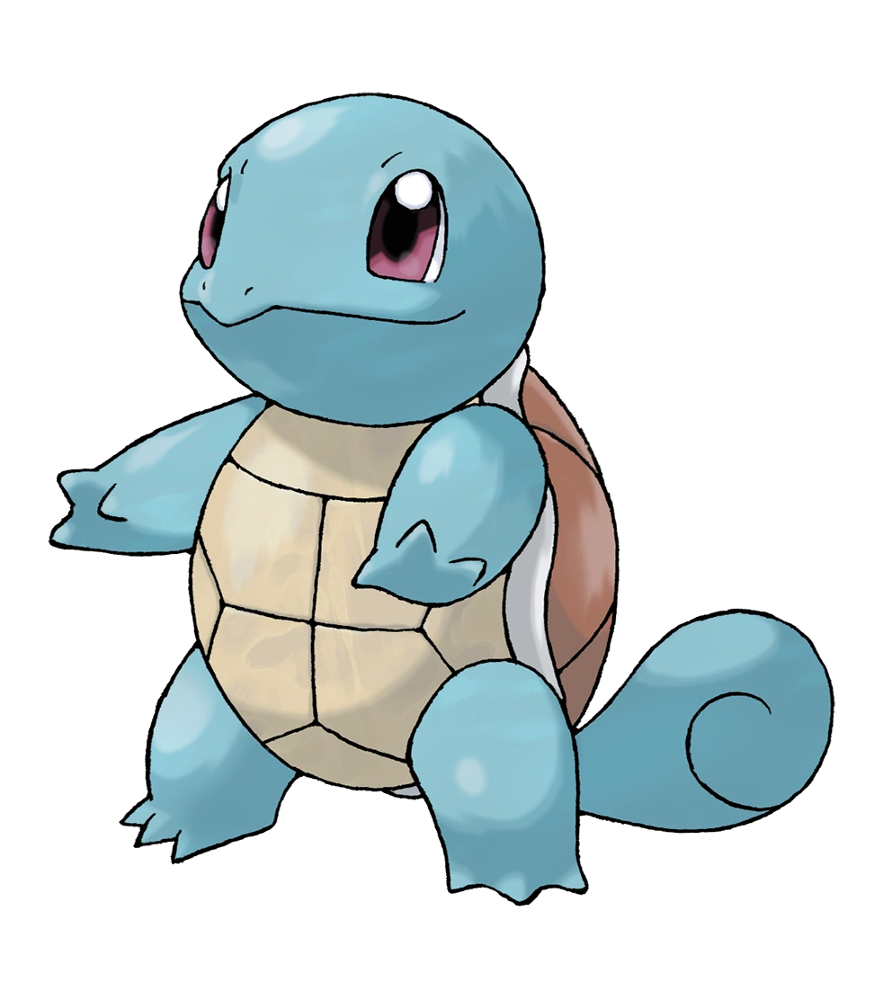

At the start of the game, Professor Oak gives the player the choice of 3 different Pokemon. Here, we'll review your choices!

Bulbasaur
Physiology
Bulbasaur resembles a small amphibian/frog, but it bears three claws on each of its feet and has no tail. It also has large, red eyes and small, sharp teeth. Its skin is a light, turquoise color with dark, green spots. It has three claws on all four of its legs. Its most notable feature, however, is the aforementioned bulb on its back, which according to its entry in the Pokédex, was planted there at birth. It also seems that it uses vines that grow out of its back as weapons, they are easily extractable.
Evolution
Bulbasaur evolves into Ivysaur starting at level 16, and into Venusaur at level 32.

Charmander
Physiology
Charmander is a bipedal, reptilian Pokémon with a primarily orange body and blue eyes. Its underside from the chest down and the soles of its feet are cream-colored. It has two small fangs visible in its upper jaw and two smaller fangs in its lower jaw. A fire burns at the tip of this Pokémon's slender tail and has blazed there since Charmander's birth. The flame can be used as an indication of Charmander's health and mood, burning brightly when the Pokémon is strong, weakly when it is exhausted, wavering when it is happy, and blazing when it is enraged. It is said that Charmander dies if its flame goes out. However, if the Pokémon is healthy, the flame will continue to burn even if it gets a bit wet and is said to steam in the rain.
Evolution
Charmander evolves into Charmeleon starting at level 16, which evolves into Charizard starting at level 36.
Squirtle
Physiology
Squirtle is a small, light-blue Pokémon with an appearance similar to a turtle. With its aerodynamic shape and grooved surface, Squirtle's shell helps it wade through the water very quickly. It also offers protection in battle. Like turtles, Squirtle has a shell that covers its body with holes that allow its limbs, tail, and head to be exposed. Unlike a turtle, Squirtle is ordinarily bipedal.
Evolution
Squirtle evolves into Wartortle starting at level 16, which evolves into Blastoise at level 36.